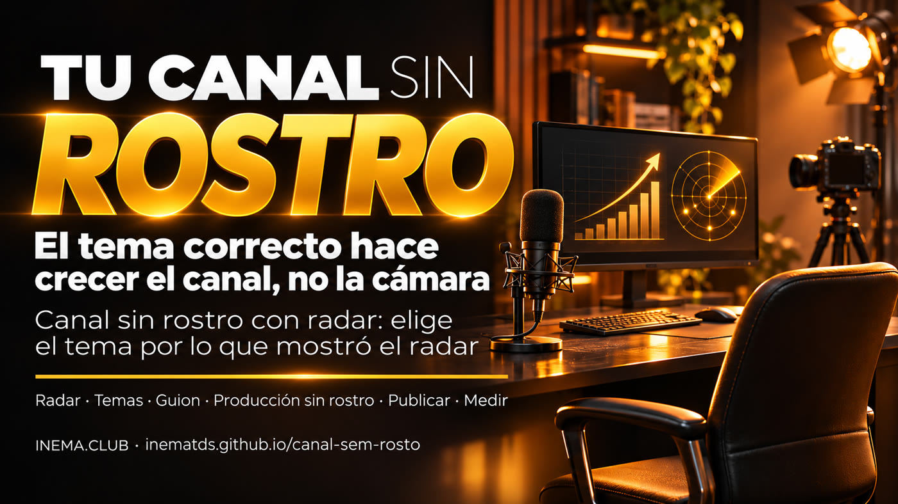

Lo que hace crecer un canal es el tema adecuado, no la cámara. El canal sin rostro con radar elige el tema según lo que mostró el radar (el radar es un panel gratis que cada mañana muestra los videos que superaron ampliamente las vistas habituales del propio canal): temas en los que los canales pequeños multiplicaron varias veces sus vistas habituales.

Mucha gente quiere tener un canal sobre IA, pero no quiere aparecer. La buena noticia: en nuestro radar de YouTube, lo que más impulsó las visualizaciones fue el tema, no quién aparece. El canal sin rostro con radar es un método de 5 etapas y un kit gratis: lee el radar de lo que está en auge, separa los temas con los que los canales pequeños y medianos rompieron la burbuja y sugiere temas con las cifras y un formato sin rostro para cada uno. Necesitas una computadora con Python y el radar youtube-bombando (también gratis). No hay promesa de dinero ni de visualizaciones: el radar muestra una oportunidad.
El video explicativo de este kit está en producción y aparecerá aquí en cuanto se publique.
Ronda del 12/11/2026 de nuestro radar: 320 videos recientes sobre 7 temas de IA. Para cada video, el radar compara las visualizaciones con lo normal del propio canal (la mediana de sus últimos videos). ¿Hizo 3 veces o más lo habitual? Entonces el tema superó la burbuja del canal. Canal pequeño = menos de 10 mil suscriptores; mediano = de 10 mil a 500 mil; por encima de eso, grande.
vinieron de videos que hicieron 3× o más de lo normal del canal. El público buscó el tema.
rompieron la burbuja con su contenido en esta ronda (frente a 5 de canales grandes).
fue el mayor salto de la ronda, en un canal pequeño, sobre una función nueva de ChatGPT para empresas.
Porcentaje de las visualizaciones de cada tema que provino de videos con 3× o más de lo habitual en el propio canal (categoría "Contenido" del radar).
Cuántas veces supera lo normal del propio canal, por duración del video: el valor central de cada rango (mediana), en la misma ronda. Entre paréntesis, cuántos videos.
Resultado real del kit sobre el radar del 12/11/2026. Solo se incluyen temas en los que al menos 2 canales pequeños o medianos diferentes hicieron 3× o más de lo normal, con 1.000 visualizaciones o más. No se muestra ningún nombre de canal ni de video: solo el tema y los números (aquí, con etiquetas resumidas de los temas y los formatos).
← arrastra la tabla hacia un lado para ver el formato sin rostro →
| # | Tema | Canales | Cuántas veces lo normal (mediana) | Duración más común | Formato sin rostro |
|---|---|---|---|---|---|
| 1 | curso o guía completa desde cero, en Claude Code | 4 | 27,3× | 20–60 min | pantalla grabada con tu narración, un proyecto por etapas |
| 2 | Claude Code (varios temas) | 3 | 11,3× | 8–20 min | gráfico o diagrama animado con tu voz, un caso de principio a fin |
| 3 | automatización y agentes, en agentes de IA | 3 | 4,9× | 20–60 min | pantalla grabada con tu narración, un proyecto por etapas |
| 4 | negocios, en ChatGPT | 2 | 412,1× | hasta 8 min | gráfico animado con tu voz, una duda resuelta con una demostración |
| 5 | opinión y tendencia del sector, en IA | 2 | 57,8× | 8–20 min | gráfico o diagrama animado con tu voz, un caso de principio a fin |
| 6 | diario de construcción (serie de días), en vibe coding | 2 | 28,7× | más de 60 min | cuadro o diagrama animado con tu voz, en capítulos |
| 7 | imagen, audio y video, en ChatGPT | 2 | 16,2× | 8–20 min | gráfico o diagrama animado con tu voz, un caso de principio a fin |
| 8 | ganar dinero y negocios, en ganar dinero con IA | 2 | 15,5× | 20–60 min | gráfico animado con tu voz, un proyecto por etapas |
| 9 | recurso nuevo, en agentes de IA | 2 | 3,7× | 8–20 min | noticia comentada con tu opinión y una prueba propia |
| 10 | herramientas, skills y plugins gratis, en Claude Code | 2 | 3,4× | 8–20 min | gráfico o diagrama animado con tu voz, un caso de principio a fin |
Los números cambian en cada ronda. Para obtener los temas de hoy sobre el tuyo, mira cómo usarlo ↓.
Del tema al video publicado y de vuelta al radar para ver si funcionó.
Ejecuta el radar de lo que está en auge en tu tema y pídele al kit los temas. Un buen tema es aquel en el que un canal pequeño tuvo muchas veces sus visualizaciones normales: el público buscó el tema, no el nombre.
En los primeros 15 segundos, el dolor o el deseo de quien mira, en "tú". Una idea por video. El kit curiosidade-viral ayuda a encontrar el gancho.
Pantalla grabada con tu narración, pizarra o diagrama animado, prueba real comentada. No aparecer es opcional; pensar, probar y explicar no lo son.
El título y la portada dicen qué gana la persona. La duración sigue lo que mostró el radar en tu tema. Publica al ritmo que puedas mantener.
Siete días después, compara tu video con lo normal de tu canal. ¿Superó lo habitual? Mantén el tema. ¿No lo superó? Cambia el tema, no la cámara.
Verificado el 13/11/2026 en las páginas oficiales de ayuda de YouTube. Esto cambia: consulta siempre la fuente antes de decidir.
1.000 suscriptores y 4.000 horas de reproducción públicas en los últimos 12 meses, o 1.000 suscriptores y 10 millones de visualizaciones de Shorts en 90 días. Fuente
1.000 suscriptores y 8.000 horas en 365 días, o 20 millones de vistas de Shorts en 90 días. Quienes ya están en el programa no tienen cambios. Las funciones para fans siguen disponibles con 500 suscriptores y 3.000 horas en el último año, o 3 millones de vistas de Shorts en 90 días. Fuente
Contenido repetitivo y basado en plantillas: presentación de imágenes o texto en movimiento sin narración, contenido genérico de IA producido en masa sin la perspectiva del creador, lectura de textos de sitios web o noticias que tú no creaste. Fuente
Tres kits gratis de INEMA que se complementan.
El radar: cada mañana, lo que está en auge en tu tema y por qué.
Convierte el radar en temas para videos sin mostrar el rostro, con las cifras y el formato.
Ayuda a escribir el gancho que hace que la gente se quede.
De aquí en adelante está la parte técnica: descargar, ejecutar y leer los temas. No necesitas esta parte para entender lo que está arriba.
Lee el archivo del radar (dados.json) y guarda saida/pautas.md y saida/pautas.json: hasta 10 temas, las señales débiles (un tema que superó la burbuja en un solo canal) y lo que queda fuera del método.
Busca el nombre de un canal, título o ID de video de terceros en tu guion o en tu salida antes de publicar.
Las 5 etapas, una por archivo, y las reglas de YouTube verificadas en la fuente, con fecha.
El título de cada video sirve solo para encontrar el tema (curso completo, comparación, novedad, negocio, etc.) y nunca aparece en el resultado. Orden: más canales diferentes, luego mayor mediana y luego más visualizaciones. Si pasan menos de 10 temas, el kit indica cuántos pasaron y no completa con señales débiles. Los temas quedan en temas.json y puedes editarlo.
Solo la biblioteca estándar, no hay que instalar nada con pip. Probado en Linux; en Windows, el comando suele ser python o py en lugar de python3. Revisa:
python3 --versionPara descargar el kit. Sin git, usa "Code → Download ZIP" en la página de GitHub y descomprime junto a la carpeta del radar.
En la misma carpeta donde está el radar (para que las dos carpetas queden una al lado de la otra):
git clone https://github.com/inematds/canal-sem-rosto cd canal-sem-rosto
Es lo que genera el dados.json. Instálalo con su guía y cambia los temas por los de tu nicho.
El repositorio incluye un radar inventado para que veas el resultado antes de tener el tuyo:
python3 pautas.py exemplos/dados-sintetico.json # abre saida/pautas.md
El radar guarda el archivo en painel/dados.json, dentro de su carpeta, después de la primera recopilación. Sin una ruta, el kit busca el radar en la carpeta de al lado (../youtube-bombando), en ~/projetos/youtube-bombando y en ~/youtube-bombando. Si está en otro lugar, pasa la ruta:
python3 pautas.py python3 pautas.py ../youtube-bombando/painel/dados.json
Predeterminado: 10 temas, 1.000 visualizaciones o más, 3× lo habitual del canal, al menos 5 videos en el promedio del canal.
python3 pautas.py --n 5 --piso-views 5000 --fator 4
Con --detalhes, el kit también guarda saida/detalhes-PRIVADO.md con títulos y canales de cada tema, para que estudies. No publiques este archivo.
python3 pautas.py --detalhes
Guarda tu guion en un archivo de texto (ej.: roteiro.txt). El verificador busca en él cualquier canal, título o id del radar. Si encuentra algo, muestra el archivo, la línea y el nombre oculto (ej.: roteiro.txt:3:U***I) y sale con código 1: quita el nombre y vuelve a ejecutarlo.
python3 checa_sem_fonte.py ../youtube-bombando/painel/dados.json roteiro.txt # "nenhuma fonte de terceiro encontrada" (ninguna fuente de terceros; el kit responde en portugués) = puedes continuar
python3 -m unittest discover -s tests
| Archivo | Qué es |
|---|---|
exemplos/dados-sintetico.json | radar inventado, con canales y títulos ficticios, que cubre los casos difíciles (sin tamaño, sin duración, humor, canal grande) |
exemplos/pautas-exemplo.md | el resultado del kit sobre ese radar inventado |
metodo/regras-youtube.md | las reglas del programa de socios y sobre el contenido repetitivo, con las fuentes oficiales y la fecha de verificación |